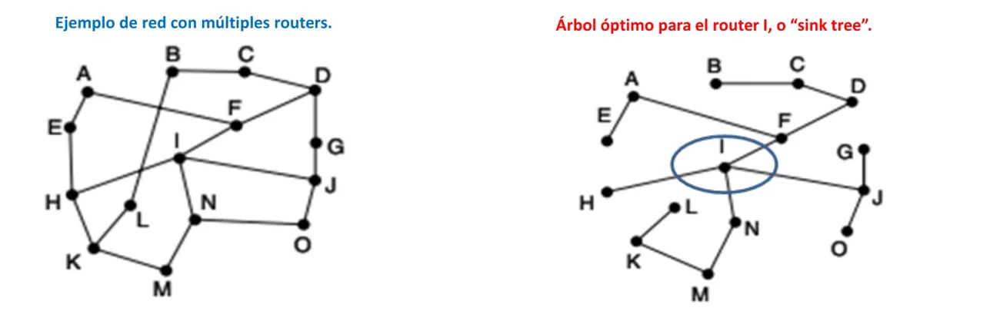
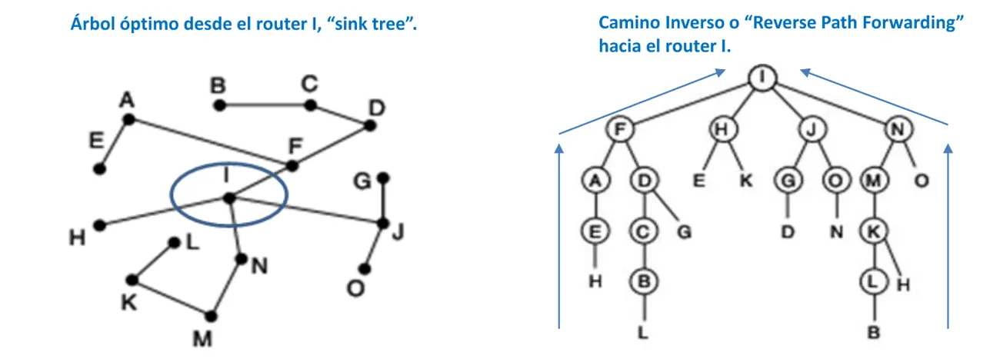
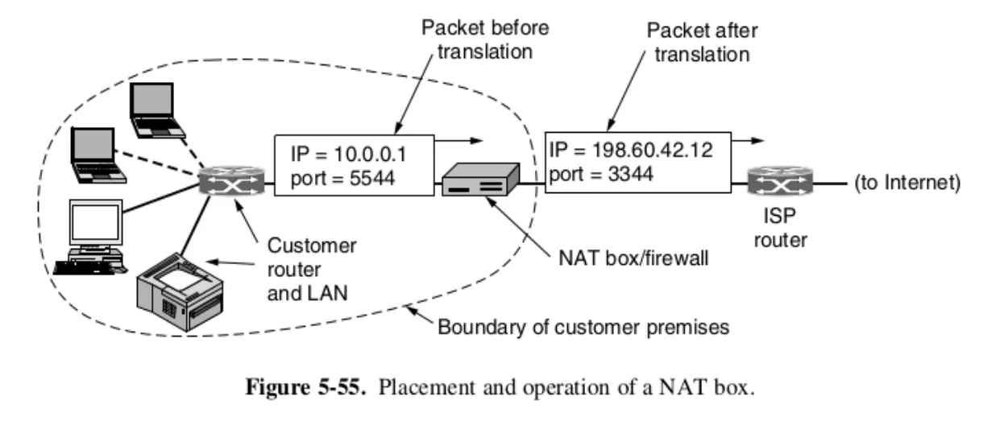
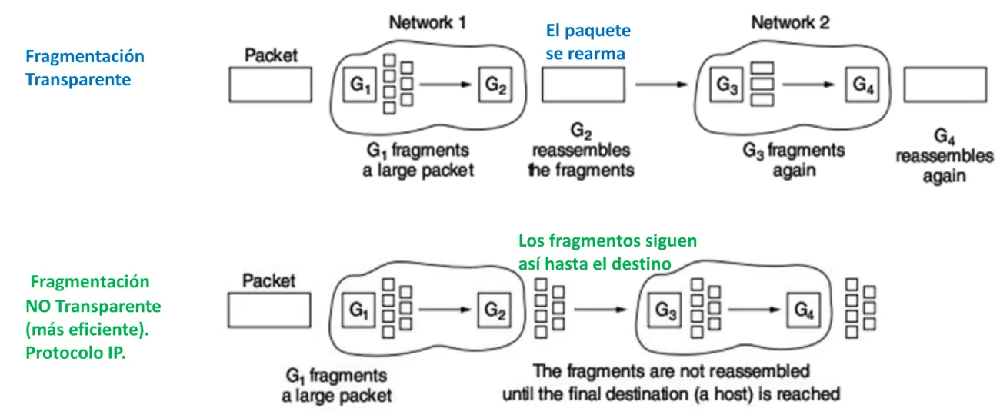
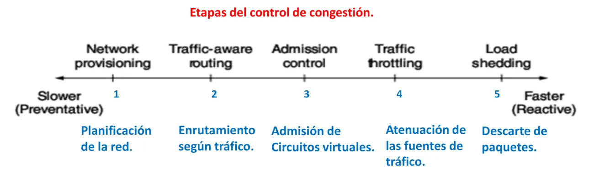
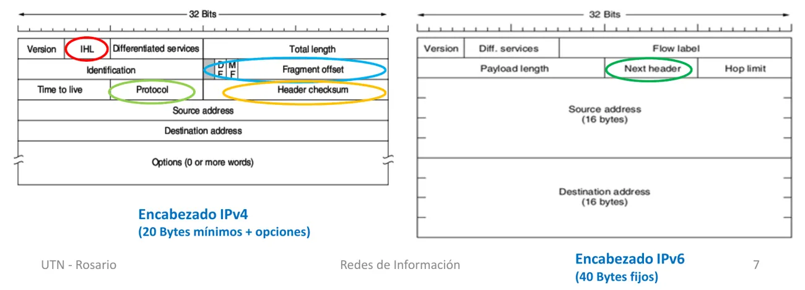
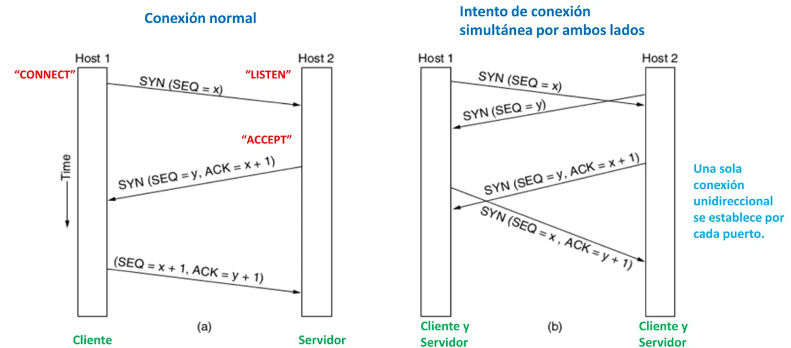
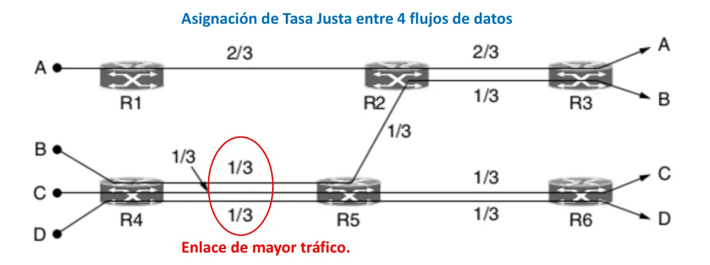
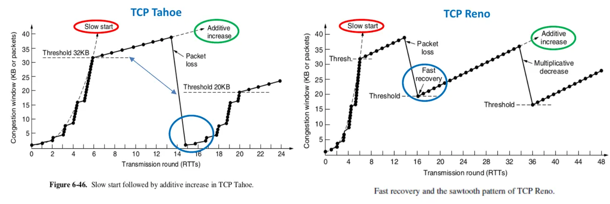

2° parcial
Capa de red, ruteo, IPv4 y subredes, congestión, calidad de servicio, IPv6 y capa de transporte.
Resumen no juzgado. Todavía nadie evaluó si alcanza para estudiar solo con esto.
Cómo viene el examen
Revisé 12 hojas de 2024, 2025 y 2026. En el Drive no hay parciales de 2023. Casi todas son de teórico escrito, con diez consignas de un punto o con cinco de a y b. Dos fechas traen práctica de subredes (29/10/2024 y 21/10/2026).
Las consignas se reciclan mucho. El parcial del 29/10/2026 repite las diez del 31/10/2025. El del 27/10/2026 repite casi todo el del 29/10/2025. El del 20/10/2026 repite la teoría del 29/10/2024.
Los cuatro finales de 2023 también preguntan estos temas. La cuenta con máscara aparece en los cuatro y ARP, en tres. Mirá la página del final.
Servicios de la capa de red
La capa 3 lleva paquetes del origen al destino final, a través de varias redes. El elemento principal es el router. Guarda cada paquete un momento, chequea errores y lo manda al puerto que indica su tabla.
| Sin conexión, datagrama | Orientado a conexión, circuito virtual | |
|---|---|---|
| Establecimiento | No hace falta | Necesario |
| Dirección en el paquete | Origen y destino completos | Solo el número de circuito virtual |
| Memoria del router | No necesita información extra | Guarda cada circuito virtual |
| Ruta | Cada paquete, independiente | Todos por la misma ruta |
| Si falla un router | Cambia la ruta | Termina la comunicación |
| QoS y congestión | Difícil de gestionar | Se reservan recursos al establecer |
IP funciona como datagrama.
Fuente: Teoría, Capa de Red, Tipos de Servicios y Distribuciones, páginas 3 a 6.
Broadcasting y sink tree
Hay tres formas simples de mandar a todos:
- Un paquete por usuario. Es lento y repite el mensaje.
- Multidestination routing. El paquete lleva una lista de destinos.
- Flooding o inundación. Sale por todos los enlaces. Es rápido, pero necesita número de secuencia para no generar una bola de nieve.
El árbol óptimo o sink tree conecta a un router con todos los demás al menor costo o distancia. Se mide por costo y no por cantidad de saltos. Cada router tiene el suyo.
Reverse Path Forwarding es la forma más eficiente de broadcast, según el apunte. Si el paquete llegó por un enlace del sink tree, se copia a las demás salidas del árbol. Si llegó por otro puerto, se descarta porque probablemente esté duplicado.
Multicast: Deering y Cheriton modificaron el sink tree, sacando los enlaces que no llevan al grupo.


En criollo
El sink tree es el mapa de los caminos más baratos desde tu casa a cada lugar de la ciudad. Cada casa tiene su propio mapa. Y el camino inverso es desconfiar de lo que llega por una calle que no está en tu mapa. Lo más probable es que sea repetido.
Para frenar la inundación, el apunte nombra el número de secuencia y el tiempo de vida. En IPv4 mirá los campos Identificación y Time to Live.
Fuente: Teoría, Capa de Red, Tipos de Servicios y Distribuciones, páginas 7 a 10. Ruta óptima, página 9. IPv4, páginas 7 y 8.
Algoritmos de ruteo
La tarea principal de la capa de red es decidir la ruta de los paquetes desde el origen hasta el destino. Los algoritmos de selección de rutas son estáticos (no adaptativos) o dinámicos (adaptativos), y los routers usan dinámicos. La ruta óptima se mide con un criterio fijado de antemano, como el menor número de saltos, el menor retardo o el menor costo.
Fuente: Teoría, Capa de Red, Ruta óptima, página 3.
El paso más corto
«Más corto» no es la distancia geométrica. Es una métrica de la red, como el retardo promedio, el costo de la comunicación o la inversa del tráfico promedio. El algoritmo elige, salto a salto, el camino de mejor métrica. El ejemplo del apunte es Dijkstra (1959).
- Se miran los vecinos del origen y se elige el de menor distancia. A los nodos cuyo camino más corto todavía no se conoce se les pone distancia infinita.
- Desde el nodo elegido se miran sus vecinos y se compara la distancia total desde el origen. Un camino más largo hacia el mismo nodo se descarta.
- Se repite hasta llegar al destino.
En el ejemplo del apunte, de A a D, el resultado es una distancia total de 10 por el camino ABEFHD. El camino alternativo por C daría 12 y se descarta.
Fuente: Teoría, Capa de Red, Ruta óptima, páginas 4 y 5.
Vector distancia y cuenta a infinito
Es el algoritmo de RIP, también llamado Bellman-Ford. Cada router guarda la distancia a todos los demás y la intercambia con sus vecinos.
Cómo arma su tabla. Para cada destino, el router suma lo que le cuesta llegar a cada vecino más lo que ese vecino dice que tarda hasta el destino, y se queda con el menor. En el ejemplo del apunte, J mide 8, 10, 12 y 6 ms hasta sus vecinos A, I, H y K. Para llegar a G, por A da 8 + 18 = 26 ms, por I 10 + 31 = 41, por H 12 + 6 = 18 y por K 6 + 31 = 37. J anota 18 ms por H. El retardo de ida puede no coincidir con el de vuelta.
Cuando un nodo vuelve a funcionar, la noticia avanza un router por actualización. En un camino lineal de N nodos hacen falta N actualizaciones.
El problema: las malas noticias viajan lento. Si A se cae, B cree que llega por C, porque C dice que está a 2 saltos. Entonces B anota 3. Después C anota 4, y la cuenta sigue subiendo sin fin. En la práctica se define «infinito» como el mayor número de saltos posible más 1.
En criollo
Dos amigos perdidos. Uno pregunta cómo llegar a un negocio que cerró. El otro dice «yo sé, a dos cuadras», aunque la ruta que recordaba pasaba por vos. Se apoyan uno en el otro, y cada vuelta suman una cuadra más.
Fuente: Teoría, Capa de Red, Ruta óptima, páginas 6 y 7.
Estado de enlaces
Son cinco pasos, y conviene saberlos en orden:
- Conocer a los vecinos y sus direcciones.
- Determinar la métrica hasta cada vecino.
- Armar un mensaje con esa información.
- Mandarlo a toda la red y recibir los de los demás.
- Calcular el mejor camino hacia cada router.
Comparado con vector distancia, pide más memoria y más proceso, pero converge más rápido.
Lo reemplazó en ARPANET en 1979, y hoy internet usa algoritmos muy parecidos, como IS-IS y OSPF. Si varios routers están en una misma LAN, la LAN se toma como un nodo más.
- Conocer a los vecinos. Al encenderse, el router manda un paquete chico pidiendo el nombre de cada vecino. La información se reparte por inundación. Cada router reenvía por sus demás puertos solo lo nuevo y descarta el resto. El mensaje tiene un tiempo de vida que baja cada segundo y un número de secuencia. Eso evita la bola de nieve de la inundación, aun con algún bit erróneo.
- La métrica. El costo se configura a mano o en forma automática. Es común que sea inversamente proporcional a la velocidad. Si un enlace de 1 Gbps cuesta 1, uno de 100 Mbps cuesta 10. Se puede sumar el retardo de ida y vuelta.
- Repartir. Cada router reenvía lo que recibe a sus otros vecinos y confirma con un acknowledgement a quien se lo mandó. Un enlace puede costar distinto en cada sentido.
IS-IS y OSPF. Los dos son de estado de enlaces. IS-IS vino de DECnet y lo adoptó la ISO. OSPF lo adoptó la IETF unos años después. La mayor diferencia es que IS-IS maneja varios protocolos de red (IP, IPX, AppleTalk) y OSPF no. RIP, de vector distancia, ya quedó obsoleto.
Fuente: Teoría, Capa de Red, Ruta óptima, páginas 8 a 11.
OSPF y BGP
Un sistema autónomo es una de las redes privadas interconectadas que forman internet.
| OSPF | BGP | |
|---|---|---|
| Dónde | Dentro de un sistema autónomo | Entre sistemas autónomos |
| Algoritmo | Estado de enlaces | Vector de paso, parecido a vector distancia |
| Qué busca | El mejor camino, y balancea con ECMP | Respetar políticas de negocio y seguridad |
| Detalles | Áreas, backbone, designated router | Multihoming, peering, rutas privadas |
RIP quedó atrás en redes grandes por la cuenta a infinito y su lenta convergencia.
Sistema autónomo, con las palabras del apunte. Internet está constituida por muchas redes privadas interconectadas, que se denominan sistemas autónomos (SA). Dentro de cada SA se usa un protocolo de encaminamiento interno (Intradomain Gateway Protocol), como OSPF o IS-IS. Entre SA distintos se usa BGP, un protocolo entre dominios (interdomain protocol).
OSPF por dentro.
- La IETF lo estandarizó en 1990, sobre la base de IS-IS de la ISO (RFC 2328).
- ECMP: los caminos de igual distancia se registran y se usan para repartir el tráfico y evitar oscilaciones.
- Áreas: un SA grande se divide en áreas que no se solapan. Sus routers son internos y la topología de un área no se conoce desde afuera, aunque sí sus destinos.
- Backbone: el área central, o área cero. Todas las demás se conectan a ella. Los border routers unen dos o más áreas y pertenecen al backbone. Resumen las distancias de un área y las reparten en las otras, sin contar la topología.
- Designated router: al encenderse, el router manda mensajes Hello para conocer a sus vecinos. Como hablar con todos es ineficiente, en cada LAN se elige un designated router y uno de backup. Cada router le manda periódicamente un Link State Update, que se confirma, y el número de secuencia dice si es nuevo o viejo. Los mensajes OSPF van dentro de paquetes IP.
BGP por dentro.
- Políticas: un SA puede no querer pasar tráfico entre dos vecinos aunque esté en el camino más corto. Hay también razones de seguridad entre países. BGP maneja esas políticas.
- Rutas privadas: las rutas óptimas tienen información sensible del negocio y no se dan a conocer.
- Multihoming: una empresa con más de un ISP sigue saliendo a internet si uno falla.
- Peering: dos SA se pasan tráfico en forma recíproca y gratuita, bajo ciertas condiciones.
- Vector de paso: además del costo, tiene en cuenta el camino que va recorriendo. Los routers BGP hablan entre sí por TCP, para que sea muy confiable. Mandan los datos en un sentido y los detalles del camino en el otro, y así detectan bucles y descartan esa ruta. La ruta suele ser la de menor costo económico para el SA.
Fuente: Teoría, Capa de Red, Protocolos de control, páginas 10 a 15. Ruta óptima, página 11.
Demasiados routers
Se divide la red en regiones, y cada router conoce solo la topología de la suya. El precio es un camino a veces más largo. Kamoun y Kleinrock hallaron que el número óptimo de niveles es , con entradas por tabla. Con los 17 routers del ejemplo da 2,8 niveles y 7,7 entradas.
Fuente: Teoría, Capa de Red, Ruta óptima, páginas 12 y 13.
Usuarios y routers móviles
- IP Mobility: el móvil pide una dirección local (Care of Address) y se la manda a su Home Agent. El Home Agent le reenvía los paquetes y después la comunicación sigue directa.
- Movilidad IPv6: evita la triangulación. También define Network Mobility para cuando viaja el router, como en un avión.
- Redes ad hoc: los usuarios son también routers. El pedido de ruta inunda la red con número de secuencia y TTL. El destino contesta hacia atrás, y la ruta queda definida en ambos sentidos. Los mensajes «Hola» controlan que el vecino siga ahí.
Fuente: Teoría, Capa de Red, Ruta óptima, páginas 14 a 16. IPv6, páginas 10 y 11.
IPv4
El encabezado
| Campo | Tamaño | Para qué |
|---|---|---|
| Versión | 4 bits | |
| IHL | 4 bits | Largo del encabezado, en grupos de 4 bytes |
| Differentiated Services | 1 byte | 6 bits de clase de servicio y 2 de congestión |
| Total Length | 2 bytes | Hasta 65.535 bytes |
| Identificación | 2 bytes | Número del paquete, para rearmar |
| DF y MF | 1 bit cada uno | Fragmentación |
| Fragment Offset | 13 bits | Posición del fragmento |
| Time to Live | 8 bits | Baja uno por router. En cero se descarta y se avisa |
| Protocol | 8 bits | TCP o UDP en los datos |
| Header Checksum | 16 bits | Errores del encabezado. Se recalcula en cada router |
| Direcciones | 32 bits cada una | Origen y destino |
El encabezado mide entre 20 y 60 bytes, y los primeros 20 son fijos. La capa de transporte suele cortar los datos en paquetes de 1500 bytes para que entren en Ethernet, aunque IP soporta hasta 64 KB. En el receptor, la capa 3 ordena los paquetes y se los entrega a transporte.
- Time to Live. Con 8 bits llega a 255 saltos. Al llegar a cero el paquete se descarta y se avisa al emisor. Así no quedan paquetes dando vueltas por la red, algo que podría pasar si se corrompe la tabla de un router.
- Fragment Offset. Con 13 bits da hasta 8191 fragmentos de un mismo paquete.
- Total Length. El máximo es bytes.
- Protocol. Dice qué protocolo de capa 4 va en los datos, TCP o UDP. Si va un mensaje ICMP, también se indica ahí.
Campos opcionales. Van después de las direcciones y el primer byte dice qué opción es. Muchos routers los ignoran o los procesan mal, así que casi no se usan.
| Opción | Qué hace |
|---|---|
| Seguridad (Security) | En la práctica no se usa |
| Ruta estricta (Strict source routing) | La lista de routers por donde debe pasar el paquete |
| Rutas posibles (Loose source routing) | Routers por donde podría pasar |
| Registro de ruta (Record route) | Cada router deja su IP, y se conoce la ruta que siguió |
| Timestamp | Cada router graba el instante en que pasó. Sirve para medir retardos |
¿Qué significa el valor 5 en el campo IHL?1° parcial 28/07/2026, recuerdo de alumno
Indica la menor longitud del encabezado, 20 bytes, sin el campo Options. Cada incremento suma 4 bytes. El valor máximo, 15, indica 60 bytes.
Fuente: Teoría, Capa de Red, IPv4, página 6.
Fuente: Teoría, Capa de Red, IPv4, páginas 5 a 9.
Prefijo y máscara
Es una cuenta que los cuatro finales de 2023 pidieron. Practicala con los ejemplos de abajo y después intentá la de cada final en Ejercicios.
Una dirección tiene 32 bits. Los de la izquierda son el prefijo de red, iguales para todos los usuarios de esa red. Los de la derecha identifican al host. La máscara tiene unos en el prefijo y ceros en el resto. Con un AND entre dirección y máscara sale la red.
Las definiciones del apunte:
- Direcciones IPv4. Tienen 32 bits, así que el máximo teórico es direcciones. Cada conector de red tiene su dirección IP, por eso un router tiene una distinta en cada interfaz. Se escriben en decimal, con un punto entre cada uno de los 4 bytes.
- Prefijo de red. Tiene longitud variable. Se lo representa con la menor dirección IPv4 de esa red, una barra y la cantidad de bits del prefijo. Con la dirección 128.208.2.151 y un prefijo de 24 bits, la red es 128.208.2.0/24.
- Máscara de subred (subnet mask). Es la dirección IP que tiene todos «1» en el prefijo de red y todos ceros en el resto de los bits de usuario. Usualmente se escribe en decimal. Haciendo una operación lógica AND entre la máscara de subred y la dirección de cualquier host de esa red, se obtiene el prefijo de la red. En el ejemplo, la máscara es 255.255.255.0.
Ejemplo de la práctica, con sus números:
Dirección 192.168.55.44
Máscara 255.255.255.0
AND 192.168.55.0 la red
Broadcast 192.168.55.255 todos unos en la parte de hostEn criollo
Es como un teléfono: la característica es de todos los de la zona y el resto identifica al abonado. La máscara marca dónde termina la característica.
Fuente: Teoría, Capa de Red, IPv4, páginas 10 y 11. Práctica, Conceptos IPv4, páginas 20 y 21.
Clases y prefijos
Hasta 1993 se usaban clases, con largo de prefijo fijo para cada una.
| Clase | Rango de redes | Máscara por defecto | Hosts por red |
|---|---|---|---|
| A | 1.0.0.0 a 127.0.0.0 | /8 | 16 millones |
| B | 128.0.0.0 a 191.255.0.0 | /16 | 65.534 |
| C | 192.0.0.0 a 223.255.255.0 | /24 | 254 |
| D | Multicast | ||
| E | Uso futuro |
Eran clases jerárquicas. La A usa 7 bits de prefijo y da 128 redes. La B, 14 bits y 16.384 redes. La C, 21 bits, casi 3 octetos.
La teoría y la práctica cuentan distinto los hosts
La teoría da 65.536 hosts para la clase B y 256 para la C, que es y . La práctica da 65.534 y 254, porque resta la dirección de red y la de broadcast. La tabla de arriba sigue la práctica. Si te lo piden, decí de dónde sale cada número.
Fuente: Teoría, Capa de Red, IPv4, página 12. Práctica, Conceptos IPv4, páginas 7 a 9.
CIDR, la agrupación por prefijos, permite largos variables y arma superredes con una sola entrada en la tabla del router (Route Aggregation). Los prefijos IPv4 bajan a unos 200.000 en el mundo, y por eso las direcciones no se agotaron como se preveía. La especificación más reciente es la RFC 4632.
La Universidad de Londres
Hay que repartir 8192 direcciones desde 194.24.0.0. Oxford necesita 4096, Cambridge 2048 y Edimburgo 1024.
| Direcciones | Bits de host | Prefijo | Máscara | Rango | |
|---|---|---|---|---|---|
| Toda la universidad | 13 | 194.24.0.0/19 | |||
| Cambridge | 11 | 194.24.0.0/21 | 255.255.248.0 | 194.24.0.0 a 194.24.7.255 | |
| Edimburgo | 10 | 194.24.8.0/22 | 255.255.252.0 | 194.24.8.0 a 194.24.11.255 | |
| Oxford | 12 | 194.24.16.0/20 | 255.255.240.0 | 194.24.16.0 a 194.24.31.255 |
Las 1024 restantes, 194.24.12.0/22, quedan sin usar. Un router de afuera, por ejemplo en Rosario, usa una sola entrada, el prefijo de superred de 19 bits.
Teoría, Capa de Red, IPv4, páginas 13 a 15
Errata del apunte
Al cerrar el ejemplo, la página 15 escribe la superred como 192.24.0.0/19. Por todo el desarrollo anterior es 194.24.0.0/19, que es lo que va arriba.
Fuente: Teoría, Capa de Red, IPv4, páginas 12 a 15. Práctica, Conceptos IPv4, páginas 7 a 9.
Direcciones especiales y subredes
| Dirección | Qué significa |
|---|---|
| 0.0.0.0 | La usa un host mientras arranca. Se refiere a la propia red |
| 255.255.255.255 | Broadcast en la misma red del host que la envía. Con otro prefijo y la parte de host en todos unos, es broadcast en esa red. Por seguridad, muchos administradores lo desactivan |
| 127.X.X.X | Bucles dentro de la misma máquina. No salen a la red |
Una subred es una red dentro de otra más grande. Una organización grande divide su red IP en subredes con prefijos distintos, para aprovechar mejor las direcciones públicas y administrar más fácil.
- Ventaja: las tablas de los routers guardan solo los prefijos, una dirección por red. Eso reduce mucho la memoria.
- Desventaja: si un usuario cambia de red, cambia su IP, porque tiene que respetar el prefijo. Una dirección Ethernet, en cambio, no cambia nunca.
- Quién asigna: ICANN, sin fines de lucro, para evitar conflictos en el mundo, y en cada país un organismo propio. Las subredes de una empresa se cambian actualizando las máscaras en los routers, sin pedirle nada a ICANN, porque se usan direcciones privadas.
Una universidad con tres departamentos
La universidad tiene 128.208.0.0/16. Ciencias de la Computación usa la mitad, con 128.208.128.0/17. Ingeniería Eléctrica usa un cuarto, con 128.208.0.0/18. Arte usa un octavo, con 128.208.96.0/19, y el octavo restante queda libre. Para afuera, toda la universidad sigue con el mismo prefijo de 16 bits. Cuando llega un paquete para 128.208.2.151, el router compara su prefijo con el de cada departamento. No coincide con el de Computación y sí con el de Eléctrica, y lo manda ahí.
Teoría, Capa de Red, IPv4, páginas 18 y 19
Fuente: Teoría, Capa de Red, IPv4, páginas 16 a 19.
Subredes
El método de la práctica son tres fórmulas:
Acá son los bits de red, las subredes pedidas, los bits de host y los hosts.
| Ejemplo de la práctica | Bits | Máscara | Hosts por red | Salto |
|---|---|---|---|---|
| 192.168.0.0/24 en 20 redes | 5 | /29, 255.255.255.248 | 6 | 8 |
| 192.168.168.0/24 en 8 áreas | 3 | /27, 255.255.255.224 | 30 | 32 |
Fuente: Práctica, Conceptos IPv4, páginas 23 a 27.
Algunas láminas tienen errores
La misma práctica, en el ejemplo 10.100.40.30/11, marca mal la última dirección útil. Controlá con la fórmula antes de copiar.
Direcciones públicas, privadas y NAT
Las públicas son únicas y circulan por internet. Las privadas se usan solo dentro de una organización.
| Rango privado | Prefijo |
|---|---|
| 10.0.0.0 a 10.255.255.255 | /8 |
| 172.16.0.0 a 172.31.255.255 | /12 |
| 192.168.0.0 a 192.168.255.255 | /16 |
Un host con dirección IP privada, ¿puede navegar por internet?Final 01/09/2023
Las IP privadas no pueden salir libremente a internet sin ser antes traducidas por el ISP en una IP pública. Eso hace NAT. Las máquinas de una misma casa se diferencian en internet por el número de puerto.
Fuente: Teoría, Capa de Red, IPv4, páginas 20 y 21.

NAT es criticada porque viola un principio del modelo IP, según el cual un paquete no debería cambiar su dirección en el viaje. Se especula que seguiría con IPv6 por seguridad, ya que bloquea los paquetes entrantes como un firewall.
En criollo
Un edificio con un solo número de teléfono y muchos internos. Afuera se ve un número solo, y el conmutador sabe a qué interno pasar cada llamada. El interno es el puerto.
Fuente: Teoría, Capa de Red, IPv4, páginas 16, 20 y 21.
Fragmentación
| Transparente | No transparente | |
|---|---|---|
| Dónde se rearma | Al final de cada red | Solo en el destino final |
| Trabajo de los routers | Mayor | Menor, por eso es más eficiente |
| Quién la usa | IP |

Hoy, Path MTU Discovery. Fragmentar agrega encabezados y trabajo. Por eso el router no fragmenta. Devuelve el paquete al origen, y el origen lo rearma con el tamaño permitido. La desventaja es que el primer paquete tarda más.
Los apuntes se contradicen con DF y MF
MF: IPv4, página 7, dice 1 si faltan fragmentos y 0 en el último. Interconexión, página 10, dice que un 1 indica el último. Sigue IPv4 página 7, que coincide con el libro.
DF: IPv4, página 7, dice que en 1 indica que el paquete no fue fragmentado. El libro de Tanenbaum y Wetherall, 5ª edición, página 377, dice que es una orden para que los routers no fragmenten. Si te lo toman, aclará qué apunte seguís.
El tamaño máximo de Ethernet
Interconexión, página 9, dice 1.550 bytes. El resto del apunte dice 1500: Redes Ethernet, página 7, y TCP, página 4. Usá 1500.
Fuente: Teoría, Capa de Red, Interconexión, páginas 9 a 12.
Protocolos de control
ARP sale en 3 de los 4 finales de 2023. Aprendé el proceso, además de la sigla.
| Protocolo | Para qué | Cómo |
|---|---|---|
| ICMP | Avisa cuando pasa algo inesperado | El router manda al origen un mensaje dentro de un paquete IP |
| ARP | Saber la MAC de una IP | Broadcast en la LAN preguntando quién tiene esa IP. El dueño contesta con su MAC |
| DHCP | Darle una IP a un host | Al encender, broadcast pidiendo IP. El servidor la asigna por un tiempo limitado |
Además de IP, que lleva los datos, la capa 3 tiene protocolos de control del tráfico. Sus mensajes suelen ir de router a router, mientras que los datos van de host a host. ICMP tiene una docena de mensajes, y el campo Protocol de IP indica que los datos son ICMP.
Mensajes de ICMP que conviene saber:
- Destino inalcanzable: el router no logra localizar el destino. Puede pasar, por ejemplo, si el paquete es demasiado grande para atravesar la red.
- Tiempo excedido: el TTL llegó a cero. Traceroute se basa en esto, con TTL de 1, 2, 3 y así. El origen va recibiendo el mensaje ICMP de cada router del camino y toma de ahí sus direcciones y retardos.
- Problema en parámetro: valor incorrecto en el encabezado.
- Bajar tráfico de fuente: le pedía al origen que bajara la velocidad ante una congestión. Hoy está en desuso.
- Ruta alternativa: hay una mejor.
- Eco: lo usa ping para saber si un host está operativo. La respuesta es un echo reply.
ARP entre dos redes. Si el host 1 quiere hablar con el host 4 de otra LAN, le manda el mensaje al default gateway, la puerta de enlace, que por defecto tiene la IP más baja de la red. Como no conoce la MAC del router, la pregunta por ARP. El router ve que el destino está en la otra LAN y repite el proceso para obtener la MAC del host 4. Las IP de origen y destino quedan fijas en todo el viaje, y las MAC cambian según la LAN por la que pasa el paquete. ARP está en la RFC 826.
DHCP. La IP de un host se configura a mano (IP fija) o, mejor, con un servidor DHCP. La IP que da el servidor vence después de un tiempo, o se renueva si la PC sigue activa. Se llama IP dinámica. DHCP (RFC 2131 y 2132) también manda otros datos de configuración, como las IP del DNS y del default gateway. Desplazó a BOOTP y RARP.
MPLS es otra tecnología de los proveedores. Agrega una etiqueta al paquete y encamina por ella, lo que resulta más sencillo y rápido.
- Funciona parecido a la conmutación de circuitos telefónicos o a los circuitos virtuales. Una tabla asocia cada etiqueta con su puerto de salida, sin mucho procesamiento. La IETF lo registró en la RFC 3031.
- Los routers IP no estaban pensados para llevar etiquetas. Se usan routers especiales, los LSR (Label Switched Router).
- El encabezado MPLS tiene 4 bytes y va entre el de capa 2 y el de capa 3. Por eso se dice que MPLS es una capa 2,5.
- Lleva una etiqueta de 20 bits, un campo de QoS, un bit que indica si hay más de una etiqueta y un Time to Live para que el paquete no circule sin fin.
Fuente: Teoría, Capa de Red, Protocolos de control, páginas 3 a 9.
Control de congestión
Los dos últimos finales lo piden con estas palabras: la secuencia de etapas.
Congestión es un retardo excesivo por exceso de paquetes en tránsito. Responden las capas 3 y 4. Más memoria en los routers no lo arregla. Una memoria infinita solo empeora el problema.
Cómo se llega. Al principio la red entrega todo lo que se le pide, en forma lineal, hasta acercarse a su capacidad. Cuando se llenan los buffers de algunos routers, se pierden paquetes. Un paquete muy demorado suele duplicarse y reenviarse, y eso empeora todo hasta colapsar la red.
Congestión no es control de flujo. El control de flujo considera un solo emisor y un solo receptor. En una congestión real son muchos los emisores y receptores con demoras o pérdidas. Hay dos salidas, aumentar los recursos o bajar el tráfico, y las 5 etapas se ejecutan en orden.
| Etapa | Nombre | Qué hace |
|---|---|---|
| 1 | Network Provisioning | Planificar. Cambiar routers y enlaces antes de que saturen |
| 2 | Traffic-Aware Routing | Repartir por rutas menos cargadas. Multipath evita oscilaciones |
| 3 | Admission Control | No admitir nuevos circuitos virtuales por la zona congestionada |
| 4 | Traffic Throttling | Pedir a las fuentes que bajen el tráfico |
| 5 | Load Shedding | Descartar paquetes |

En criollo
Pensá en una autopista. Ensanchás antes de que haga falta, desviás por rutas libres, cerrás algunos accesos, le pedís a la gente que salga menos y, como último recurso, sacás autos del camino.
Más detalle de las primeras tres etapas:
- Planificación. Es un proceso lento, de meses. Se cambian los routers y enlaces cargados antes de que saturen, se usan líneas de backup o se alquilan enlaces por un tiempo. Sobredimensionar evita la congestión, pero tiene un costo injustificado.
- Rutas según tráfico. El peso de cada enlace tiene una parte fija (ancho de banda, retardo de propagación o costo) y una variable (el tráfico o la espera promedio). El riesgo es la oscilación. Todo el tráfico se va a la ruta menos cargada, en la próxima actualización se va a la otra, y así. La solución es multipath routing, varias rutas de costo parecido con cambios lentos de una a otra.
- Admisión. El pedido de un circuito virtual nuevo debería decir cómo es su tráfico, la tasa promedio y su forma. Un streaming es más fácil de manejar que la navegación web, que tiene picos. Se combina con la etapa 2, armando los circuitos nuevos por una ruta que evite los puntos congestionados.
La etapa 4 tiene tres técnicas:
| Técnica | Cómo | Comentario |
|---|---|---|
| Aviso hacia atrás | El router congestionado avisa a la fuente | En desuso, según el apunte de ICMP |
| Aviso hacia adelante, ECN | Marca un bit. El receptor le avisa a la fuente con un choke | Más lento, sin recargar routers |
| Hop-by-hop backpressure | Cada router avisa al anterior y baja el tráfico | La más rápida, recarga routers |
En la etapa 4, los routers mandan feedbacks periódicos a las fuentes. En el aviso hacia atrás, el paquete de aviso viaja a baja velocidad para no cargar más la red, y el original sigue a destino. ECN es lo que se usa hoy en internet. Se hace junto con la capa de transporte, porque el aviso va de extremo a extremo y el router solo marca el paquete. En hop-by-hop backpressure, cada router que recibe el aviso guarda los paquetes de más, baja el tráfico hacia adelante y avisa hacia atrás, con efecto inmediato.
En la etapa 5, RED descarta antes de que se llene la memoria. Qué se descarta depende del tráfico. En archivos, los últimos paquetes. En streaming, los más viejos. Los de control se conservan.
- Siempre es mejor perder paquetes que dejar colapsar la red. El nombre Load Shedding viene de las redes eléctricas, cuando se apaga una zona para salvar el resto.
- Cuanto antes se empieza a descartar, mejor. RED (Random Early Detection) promedia los retardos en las colas y empieza a descartar al pasar un máximo. TCP baja solo su tráfico cuando detecta pérdidas.
- En un archivo no sirve tirar el paquete 6 y quedarse con el 7, el 8 y el 9. En un MPEG conviene conservar la imagen completa y tirar las modificaciones que siguen.
Fuente: Teoría, Capa de Red, Congestión, páginas 3 a 13. Protocolos de control, página 4.
Calidad de servicio
| Parámetro | Qué se puede hacer |
|---|---|
| Velocidad (bit rate) | Solo aumentar recursos |
| Retardo (delay) | Solo aumentar recursos |
| Variación del retardo (jitter) | Suavizar con un buffer en el receptor |
| Pérdida de paquetes (loss) | Retransmitir o usar códigos correctores |
Sobredimensionar la red funciona, pero es caro.
Según la tasa de bits, el apunte distingue constante, variable en tiempo real, variable en diferido y disponible. La tabla de la página 4 muestra qué aprieta a cada aplicación:
| Aplicación | Ancho de banda | Retardo | Jitter | Pérdida |
|---|---|---|---|---|
| Correo | Bajo | Bajo | Bajo | Medio |
| Compartir archivos | Alto | Bajo | Bajo | Medio |
| Web | Medio | Medio | Bajo | Medio |
| Login remoto | Bajo | Medio | Medio | Medio |
| Audio a pedido | Bajo | Bajo | Alto | Bajo |
| Video a pedido | Alto | Bajo | Alto | Bajo |
| Telefonía | Bajo | Alto | Alto | Bajo |
| Videoconferencia | Alto | Alto | Alto | Bajo |
Otros nombres del tema: balde agujereado para dar forma al tráfico, FIFO y Fair Queueing para las colas, RSVP y Servicios Integrados con reserva de punta a punta, y Servicios Diferenciados por clases, salto a salto.
El apunte no da un ejemplo de cada tipo de tráfico
Las consignas del 29/10/2025 y del 27/10/2026 lo piden. El apunte nombra las cuatro categorías sin ejemplos. El libro de la bibliografía que está en el Drive, Tanenbaum y Wetherall, 5ª edición, da uno de cada una en la página 349. Leelo ahí o preguntá en tu comisión cuáles aceptan.
Para asegurar la QoS, el apunte pide tres cosas. Saber si la red tiene capacidad para más tráfico. Poder regular el tráfico y conocer su forma. Y poder reservar recursos del router, que son tiempo de procesamiento, memoria y velocidad de salida.
Fuente: Teoría, Capa de Red, Calidad de Servicio, páginas 3 a 6, 10 a 15.
Dar forma al tráfico
Balde agujereado (leaky bucket, Turner 1989). Sin importar a qué velocidad se llene el balde, el agua sale por el agujero a ritmo constante. Si rebalsa, el exceso se pierde. Aplicado a la red, los paquetes que llegan esperan a que el balde se vacíe o se eliminan. Así se regula el tráfico que entra, y el proveedor necesita conocer la forma del tráfico del usuario para garantizar la calidad.
Los ejemplos del apunte usan una PC con un enlace de 1 Gbps (125 MB/s) y un tráfico promedio de 200 Mbps (25 MB/s). Manda una ráfaga de 125 ms a máxima velocidad, unos 15,625 MB.
| Memoria del balde | Qué pasa |
|---|---|
| 16 MB | Es el balde más chico por donde la ráfaga pasa sin retardos |
| 9,6 MB | La PC manda a 125 MB/s solo hasta vaciar el balde, a los 76,8 ms, y sigue a 25 MB/s. No se pierde nada, la ráfaga se desparrama en más tiempo |
| 0 MB | No permite ráfagas. El tráfico se demora en la PC. La ráfaga tarda 625 ms en salir y todo termina a los 1000 ms |
Para suavizar más se pueden poner dos baldes en cascada. El primero limita la tasa promedio y el segundo, de tasa mayor, suaviza las ráfagas.
Fuente: Teoría, Capa de Red, Calidad de Servicio, páginas 6 a 9.
Reserva de recursos y colas
Los Packet Scheduling Algorithms asocian recursos de un router a ciertos flujos. Se reservan la velocidad de un puerto de salida, la memoria y el tiempo de procesamiento. Elegir la ruta según la QoS se llama QoS Routing, y en esos algoritmos negocia toda la ruta, el emisor, el receptor y cada router.
| Algoritmo de colas | Cómo funciona |
|---|---|
| FIFO | Sale primero el que llegó primero. No sirve para la QoS, porque los paquetes críticos necesitan prioridad |
| Fair Queueing (Nagle, 1987) | Varias colas por línea de salida en lugar de una. Los paquetes largos salen favorecidos |
| WFQ (Weighted Fair Queueing) | Da más bytes por turno a una cola, por ejemplo al video frente a un archivo. En la práctica se usa una variante aproximada |
| Retardo total | La prioridad es el instante de partida. Un paquete demorado en un router pasa a tener más prioridad en los siguientes |
RSVP (Resource reSerVation Protocol) reserva los recursos. Usa Reverse Path Forwarding, arranca en el receptor y va remontando el árbol. Si un router no tiene recursos, manda un error. Al llegar a la fuente está todo reservado y empieza la transmisión.
Servicios Integrados y Diferenciados
| Servicios Integrados | Servicios Diferenciados | |
|---|---|---|
| Cuándo | IETF, 1995 a 1997, RFC 2205 a 2212 | 1998, RFC 2474 y 2475 |
| Alcance | Reserva de punta a punta, en cada router del camino, antes de mandar datos | Por salto. Depende del trato de cada router y no está garantizado en todo el camino |
| Cómo | Las fuentes se describen con token buckets. Se negocian tráfico promedio y máximo, almacenamiento y paquete mínimo y máximo | El paquete va marcado en los campos de IP para eso, según la clase contratada |
| Hoy | Es complejo con miles de flujos y no se aplica en la mayoría de las redes | Más sencillo, porque no necesita establecimiento previo |
En Servicios Integrados, si dos receptores piden recursos distintos para la misma fuente, se reserva para el mayor de los dos pedidos. Un receptor nuevo reserva solo hasta el router donde ya está hecha la reserva.
En Servicios Diferenciados, el IETF definió clases generales, independientes de cada operador:
- Regular y especial (RFC 3246). Unos pocos paquetes reciben trato especial, con poco retardo, poco jitter y pocas pérdidas, como hace falta para VoIP. Se marcan en el origen o en el primer router. Van por la misma red, en colas de mayor prioridad. Si cruzan una red sin servicio especial, se tratan como regulares.
- 12 clases (RFC 2597). Cuatro prioridades, por ejemplo oro, plata, bronce y carbono, combinadas con tres modos de descarte ante congestión, alto, medio y bajo.
Fuente: Teoría, Capa de Red, Calidad de Servicio, páginas 10 a 17.
IPv6 e interconexión
Objetivos: más direcciones, tablas de ruteo más chicas, routers más rápidos, más seguridad, foco en QoS, mejor multicast, y que las versiones viejas convivan con las nuevas.
| IPv4 | IPv6 | |
|---|---|---|
| Dirección | 32 bits | 128 bits |
| Encabezado | De 20 a 60 bytes | 40 bytes fijos |
| IHL | Sí | No |
| Qué transporta | Campo Protocol | Campo Next Header |
| Fragmentación | Campos propios | Encabezado adicional y MTU path |
| Checksum | Sí, en el encabezado | No. Lo dejan a las capas 2 y 4 |
| Tamaño mínimo | 576 bytes | 1280 bytes |

Los objetivos de la IETF, que empezó en 1990, con más detalle:
- Direcciones: soportar más de mil millones de hosts y que un host cambie de lugar sin cambiar su IP.
- Routers: tablas más chicas y un trabajo más simple, para que sean más rápidos.
- Seguridad: más seguridad en autenticación y privacidad.
- QoS: foco en el tipo de servicio, sobre todo con datos en tiempo real.
- Multicasting: rangos de direcciones propios.
- Compatibilidad: permitir que el protocolo evolucione y que las versiones viejas convivan con las nuevas.
La propuesta elegida se llamó primero SIPP y después IPv6 (RFC 2460 a 2466). Con 128 bits hay más direcciones que el número de Avogadro, . En general IPv6 no es compatible con IPv4, pero sí con los protocolos que lo acompañan, como TCP, UDP, ICMP, OSPF, BGP y DNS, con pequeños cambios por las direcciones más largas.
| Campo del encabezado fijo | Qué lleva |
|---|---|
| Versión | 4 bits. 0110 en IPv6 y 0100 en IPv4 |
| Calidad de servicio | Clases de servicio y aviso de congestión, como en IPv4 |
| Etiqueta del flujo | Si un grupo de paquetes tiene requerimientos parecidos de retardo, jitter, tasa y descarte |
| Longitud de carga | Cuántos bytes siguen después del encabezado |
| Próximo encabezamiento | Si hay encabezados adicionales. Si no hay, el protocolo que va en los datos |
| Límite de saltos | Si se pasa la cantidad de routers fijada, el paquete se descarta. Es como el Time to Live |
| Direcciones | 16 bytes cada una |
Cómo se escriben. Son 8 grupos hexadecimales de 2 bytes, separados por dos puntos, como 8000:0000:0000:0000:0123:4567:89AB:CDEF. Se pueden sacar los ceros a la izquierda de cada grupo y reemplazar los grupos de ceros por un doble dos puntos, 8000::123:4567:89AB:CDEF. Una dirección IPv4 se escribe con doble dos puntos adelante, ::192.31.20.46.
Encabezados adicionales (Extension Headers). Llevan lo de IPv4 que hace falta en algunos casos. Hay 6 tipos opcionales, para información de los routers, información del destino, la lista de routers del camino, los fragmentos, la autenticación del emisor y los contenidos encriptados. Cada uno tiene tres partes:
- Tipo, 1 byte. Los dos primeros bits dicen qué hace el router. Puede dejar pasar el paquete, descartarlo y mandar un ICMP hacia atrás, o descartarlo sin avisar. También dice si el encabezado pasa de los 8 bytes por defecto.
- Longitud, 1 byte, de 0 a 255.
- Valor, hasta 255 bytes.
El ejemplo del apunte es el de tipo salto a salto para los jumbograms, paquetes de más de 64 KB, que procesan todos los routers del camino.
Túnel: dos redes IPv6 se unen a través de una IPv4. El router multiprotocolo mete el paquete IPv6 entero en el campo de datos de uno IPv4, y el otro extremo lo saca. Es una excepción al modelo de capas. También se usa en VPN.
En criollo
El túnel es poner una carta dentro de otro sobre para que pase por un correo que no acepta el sobre original. Al llegar al otro lado, sacan la carta y sigue viaje.
Fuente: Teoría, Capa de Red, IPv6, páginas 3 a 9. Interconexión, página 7.
Capa de transporte
Su fin es brindarle a la capa de aplicación un servicio de transmisión confiable, eficiente y costo-efectivo. Es la primera que trabaja de extremo a extremo, y reside en los hosts.
- Entidad de transporte. Es el conjunto de software y hardware de la capa 4. Puede estar en el kernel del sistema operativo, en librerías de aplicaciones de red, en una placa de red o en un proceso separado de un usuario.
- De extremo a extremo. No importa cuántas redes haya en el camino. Las capas 1, 2 y 3 trabajan salto a salto, y sus elementos principales son los routers. En la capa 4 son los hosts.
- Dos servicios. El orientado a conexión da conexiones confiables aunque la red pierda paquetes o se congestione. Tiene tres fases, establecimiento, transferencia de datos y liberación, con control de flujo y direccionamiento. Lo hace TCP. El no orientado a conexión manda datagramas, sin conexión ni confiabilidad, por ejemplo para streaming de audio y video. Lo hace UDP, con control de errores optativo.
- Segmento. Así se llama la unidad de datos de la capa 4. Antes se le decía TPDU (Transport Protocol Data Unit).
Fuente: Teoría, Capa de Transporte, Servicios y Primitivas, páginas 3 a 5.
Direccionamiento y sockets
El extremo de una conexión se llama TSAP o puerto, con 16 bits. Un host usa varios puertos con una sola IP. Ejemplos del apunte son Telnet 23, SMTP 25, HTTP 80 y FTP 21. Para hallar el puerto de un servicio, el apunte da el Port Mapper (puerto 111) y el Process Server.
- Port mapper: asocia el nombre de un servicio con su número de puerto. Usa por defecto el puerto conocido 111. Un host le pregunta qué puerto usa un servicio y el port mapper le contesta.
- Process server: vigila varios puertos a la vez, como un proxy. Cuando un cliente busca un servicio en un puerto, el process server aprovecha ese mismo puerto para conectarlo con el servicio.
Las primitivas del servidor son SOCKET, BIND, LISTEN y ACCEPT, en ese orden. Al final, CLOSE de ambos lados. El cliente usa CONNECT.
Qué es un socket, según el apunte. Las primitivas son unidades de software que hacen una función chica y específica, como parte del servicio de la capa. En la capa 4 se las conoce como sockets. Los programadores las escriben sin depender de la red donde van a funcionar. Las primeras de TCP salieron en 1983 con Unix Berkeley 4.2. En Windows hay una API parecida, winsock.
| Primitiva del servidor | Qué hace |
|---|---|
| SOCKET | Crea un extremo de comunicación y reserva espacio en las tablas de la entidad de transporte |
| BIND | Asigna direcciones locales de capa 4 al socket (puertos), para que los clientes se puedan comunicar |
| LISTEN | Asigna espacio para las colas de espera de clientes |
| ACCEPT | Se usa cuando llega un segmento de un cliente que pide conexión |
El fin de la comunicación es simétrico. El cliente no necesita BIND, porque el servidor no se fija en su dirección. Con TCP el socket da una comunicación orientada a conexión, el Reliable Byte Stream. Sin conexión, CONNECT define la dirección remota y SEND y RECEIVE mandan datagramas. Protocolos más nuevos, como SCTP (RFC 4960) y SST, cambian un poco la API.
Dos rangos para los puertos reservados
IPv4, página 21, dice de 0 a 4096. TCP, página 3, dice menores a 1024. Es mejor citar el de TCP, que es el apunte de ese tema.
Fuente: Teoría, Capa de Transporte, Características, página 3. Servicios y Primitivas, páginas 6 a 9. TCP, página 3.
Multiplexación
- Multiplexación: una sola dirección de red, varios puertos a la vez.
- Inversa: una conexión usa varios caminos de red en paralelo para ir más rápido. Lo hace SCTP. TCP no, porque es unicast.
Fuente: Teoría, Capa de Transporte, Características, página 13.
El segmento TCP
TCP comunica dos hosts, unicast, full-dúplex y de extremo a extremo. No soporta multicast ni broadcast. Un segmento puede llegar a casi 64 KB, pero no suele pasar de 1460 bytes para entrar en una trama Ethernet de 1500 con los encabezados de TCP e IP. Así se evita fragmentar. La conexión es byte-stream y no de mensajes. Si un proceso escribe 2048 bytes en 4 cadenas de 512, TCP puede mandarlos así, en dos de 1024 o en una de 2048, y el receptor no sabe cómo se partieron.
El encabezado tiene 20 bytes fijos, como IPv4, más hasta 20 bytes de opciones.
| Campo | Qué lleva |
|---|---|
| Puertos | De origen y de destino |
| Números de secuencia | El del segmento enviado y el del segmento recibido |
| TCP header length | 4 bits que dicen dónde empiezan los datos, porque las opciones alargan el encabezado. Siguen 4 bits sin uso |
| 8 bits de control | CWR, ECE, URG, ACK, PSH, RST, SYN y FIN |
| Window size | Los bytes que se pueden mandar sin recibir su confirmación. Máximo = 64 KB |
| Checksum | Obligatorio. Controla el segmento entero más el pseudoencabezado IP |
| Urgent pointer | Junto con URG, marca los datos urgentes |
| Opciones | Hasta 20 bytes más |
| Bit | En 1 indica |
|---|---|
| CWR y ECE | Congestión con ECN. ECE le avisa al emisor que baje la velocidad, y el emisor contesta con CWR que ya la bajó |
| URG | Hay datos urgentes, que saltan el orden normal en el receptor |
| ACK | El segmento trae una confirmación |
| PSH | El receptor pasa los datos a la aplicación sin guardarlos en el buffer |
| RST | Hay que recomenzar la conexión por un problema |
| SYN | Pedido de conexión |
| FIN | El emisor no tiene más datos y se puede desconectar |
El pseudoencabezado. El checksum de TCP revisa también algunos campos del paquete IP, y eso viola la estructura de capas. En UDP el pseudoencabezado IPv4 son las dos direcciones IP de 32 bits, un byte de ceros, el número de protocolo (17 para UDP) y la longitud del segmento. Ayuda a detectar paquetes de capa 3 con errores.
Opciones más usadas.
- Tamaño máximo de segmento (Maximum Segment Size). Por defecto, 556 bytes, que todo host debe aceptar. Puede ser distinto en cada sentido y define el buffer del receptor.
- Escala de ventana (Window Scale). La ventana por defecto, de 64 KB, se agota en 1 ms en una línea de 600 Mbps. En una conexión transoceánica de unos 50 ms la línea queda sin usar el 98% del tiempo. Con esta opción la ventana llega a bytes, 1 GB.
- Timestamp. El instante de salida, para estimar el viaje y decidir si el segmento se perdió.
- SACK (Selective Acknowledgement). El receptor manda de una vez el rango de los segmentos que recibió bien.
Por seguridad, hoy el establecimiento usa también criptografía para evitar conexiones maliciosas (RFC 4987). La desconexión necesita cerrar los dos sentidos, así que se mandan 4 segmentos, un FIN y su ACK en cada dirección. Si se pierde uno, un temporizador cierra igual y se evita el problema de los dos ejércitos.
Nagle. Para ser más eficiente, TCP intenta mandar segmentos grandes cuando la aplicación tolera algo de retardo. Es el algoritmo de Nagle.
Temporizadores. El más importante decide cuándo dar por perdido un segmento y retransmitirlo. En capa 4 es más difícil que en capa 2, porque el tiempo de llegada de las confirmaciones varía mucho más. Un time-out muy grande agrega retardos innecesarios y uno muy chico genera retransmisiones de más. La mejor solución es ajustarlo en forma dinámica según la congestión. El mínimo suele ser 1 segundo.
Fuente: Teoría, Capa de Transporte, TCP, páginas 4 a 13. UDP, página 4.
Establecimiento de la conexión
Cliente Servidor
LISTEN
CONNECT SYN=1, ACK=0, secuencia x --->
<--- SYN=1, ACK=1, secuencia y, confirma x
secuencia x+1, confirma y --->
El número de secuencia, de 32 bits y con valor inicial aleatorio, evita predicciones. Los segmentos duplicados se descartan porque un número no se reusa durante cierto tiempo.
Por qué hace falta. El apunte da el ejemplo de un cliente que le pide a un banco una transferencia. Los paquetes tardan, el cliente cree que se perdieron y reenvía el pedido. El banco recibe los dos y transfiere dos veces. La mejor solución es limitar la vida de un segmento, por tiempo o por saltos, y también la de las confirmaciones. En la internet actual el tiempo máximo de vida ronda los 120 segundos. Un número de secuencia no se repite hasta pasado , cuando los segmentos viejos ya se descartaron.
El método de las tres vías es de Tomlinson (1975). El número de secuencia sale de un reloj de tiempo real de cada host, y los relojes no necesitan estar sincronizados.
La desconexión es simétrica, con dos canales que se cierran por separado. Ahí aparece el problema de los dos ejércitos.
- Simétrica o asimétrica. Es simétrica cuando la comunicación se ve como dos canales de un solo sentido que se desconectan por separado. Es asimétrica en una llamada telefónica, donde si uno corta termina todo. Hay que evitar la desconexión abrupta de un lado, porque se pueden perder segmentos.
- Los dos ejércitos. Dos ejércitos azules vencen al blanco solo si atacan juntos, y se coordinan con mensajeros que pueden ser capturados en el valle. Si el azul 1 manda su mensaje, no ataca porque no sabe si llegó. Si el azul 2 confirma, ahora es él quien no sabe si su confirmación llegó. La sucesión no tiene solución, porque nunca se sabe si llegó el último mensaje.
- En la práctica, cada lado decide por su cuenta cuándo desconectar, y la desconexión coordinada también es un handshake de tres vías. Si se pierde la confirmación, se desconecta igual al vencer un timeout. Si se pierde el pedido de desconexión, se reenvía. Si se pierde todo, los dos lados desconectan al vencer sus tiempos, como cuando el enlace queda fuera de servicio.
Fuente: Teoría, Capa de Transporte, Características, páginas 5 a 9. TCP, páginas 6 y 10.
Control de errores y ARQ
Cada segmento lleva un checksum. En TCP es obligatorio y en UDP, opcional. UDP detecta el error y avisa a las capas superiores, sin retransmitir.
ARQ: el segmento se numera. Si no llega la confirmación del receptor, se reenvía después de un tiempo, hasta que confirme.
ARQ no es ARP
ARQ es Automatic Repeat reQuest, de transporte. ARP es Address Resolution Protocol, para hallar la MAC. El apunte lo advierte.
Por qué transporte controla errores si enlace ya lo hace. Un error dentro de un router no lo detecta la capa de enlace. Y Ethernet no controla errores, porque deja que los repare la capa 4.
La capa 4 usa los mismos mecanismos de errores y de flujo que la capa 2, pero de extremo a extremo y no salto a salto. El control de flujo es con ventana deslizante. Con un producto retardo por ancho de banda alto, como en un satélite, TCP usa una ventana más grande.
Buffers. Con ventanas grandes, cada segmento que llega ocupa un buffer. Pueden ser todos del mismo tamaño, que es lo más sencillo, de tamaños distintos o un espacio circular, que tal vez sea la mejor solución. El emisor pide al principio cuántos buffers y de qué tamaño, y con cada confirmación el receptor informa qué segmento recibió y cuánto espacio le queda. Si se pierde el aviso de que hay espacio, el emisor queda bloqueado. Para evitarlo, cada host manda periódicamente el estado de sus buffers. Cuando la memoria no es el problema, el cuello de botella es la red, y la ventana dinámica ajusta el flujo a la capacidad de la red y a la memoria libre.
Fuente: Teoría, Capa de Transporte, Características, páginas 10 a 12. UDP, páginas 3 y 4.
Tasa justa y AIMD
La congestión la detecta la capa de red y la causa el tráfico que manda transporte.
Tasa Justa o Máx-Mín: una asignación es justa si cualquier aumento implica bajarle la tasa a otra fuente. En el ejemplo del apunte, con enlaces de capacidad 1, las tres fuentes del enlace más cargado reciben 1/3 y la cuarta dispone de 2/3.

En criollo
Repartir una pizza: está bien repartida cuando, para darle una porción más a uno, tenés que sacársela a otro.
AIMD es la ley óptima de control, de Chiu y Jain, 1989. Sube de a sumas y baja por multiplicación. La fuente con más tráfico baja más rápido, y así converge. Es la que usa TCP. No es del todo justa, porque las conexiones cortas reciben más tasa.
Fuente: Teoría, Capa de Transporte, Características, páginas 14 a 19.
Slow start, Tahoe y Reno
TCP ajusta su ventana según AIMD. Los acknowledgements marcan el ritmo de envío, y eso se llama Ack-Clock.
- Incremento aditivo: suma una unidad por cada retardo de ida y vuelta.
- Slow start: arranca con un segmento y duplica la ventana con cada confirmación que vuelve a tiempo.
- Tahoe (1988): hace slow start hasta un umbral y sigue aditivo. Con tres avisos duplicados asume una pérdida, y recomienza con la mitad de la ventana anterior.
- Reno (1990): agrega fast recovery. Tras la pérdida retoma desde la mitad y aplica AIMD.

En criollo
Arrancás en una ruta desconocida acelerando fuerte hasta cierto punto, y después de a poco. Cuando hay un problema, frenás. Tahoe frena hasta casi parar. Reno baja a la mitad y sigue.
Fuente: Teoría, Capa de Transporte, TCP, páginas 14 a 16.
TCP y UDP frente a frente
| TCP | UDP | |
|---|---|---|
| Servicio | Orientado a conexión, confiable | Sin conexión |
| Encabezado | 20 bytes más opciones | 8 bytes |
| Checksum | Obligatorio | Opcional |
| Retransmisión y flujo | Sí | No, queda para la aplicación |
| Congestión | Sí, AIMD | La atiende la aplicación o RTP y RTCP |
| Comunicación | Unicast full-dúplex, byte-stream | Mensajes de puerto a puerto |
| Se usa en | Conexiones confiables | Streaming, VoIP, RTP |
¿Qué protocolo de capa 4 usarías para un streaming de voz y cuál para una transferencia bancaria?Finales 17/03/2023 y 01/12/2023
Para streaming, UDP, porque en tiempo real no hay tiempo de retransmitir. Para el banco, TCP, que da una conexión confiable con retransmisión de los segmentos perdidos. La guía de capa de red pone el homebanking como servicio orientado a conexión porque no tolera pérdidas.
Fuente: Teoría, Capa de Transporte, Servicios y Primitivas, página 4. UDP, página 6. Práctica, Problemas de Capa de Red, página 1.
Congestión en UDP: la consigna del 29/10/2024 y del 20/10/2026 la pregunta. El apunte dice que UDP no hace control de flujo ni retransmite. Los protocolos que no son TCP deben ser «TCP amigables», con una ley parecida, para no quedarse con casi toda la tasa.
Datos urgentes: URG en 1 y Urgent Pointer indican datos que saltan el orden normal. Se usa poco.
Fuente: Teoría, Capa de Transporte, TCP, páginas 4 a 6. UDP, páginas 3 y 4. Características, página 19.
UDP, RTP y RTCP
UDP (RFC 768) manda segmentos de puerto a puerto, sin conexión ni desconexión. Deja a las aplicaciones el manejo de errores y del flujo. Su encabezado tiene 8 bytes, con 2 para el puerto de origen y 2 para el de destino. El segmento va de 8 bytes a 65.515, un poco menos de 64 KB, para que el más largo entre en un paquete IP.
El checksum es opcional y revisa el segmento entero más el pseudoencabezado IP, igual que TCP. Suma las palabras de 16 bits en complemento a uno y toma el complemento a uno del resultado. Por eso, cuando el receptor hace la cuenta incluyendo el checksum, tiene que dar cero. Si no se calcula, va en ceros. No conviene desactivarlo, salvo con datos poco importantes, como la voz sobre IP. Si detecta un error, avisa a las capas superiores y ellas deciden.
RPC (Remote Procedure Call) es pedir que un proceso se ejecute en otro host como si fuera una función local, por ejemplo al pedir una canción en un servicio de música. UDP sirve para transportarlo.
- El cliente ejecuta la primera parte, el client stub.
- Ese proceso arma el segmento para el servidor (marshaling).
- El sistema operativo del cliente lo envía.
- El del servidor se lo pasa al server stub.
- El server stub le pide al servidor los parámetros.
La respuesta vuelve con pasos parecidos. Es un mecanismo distinto del de los sockets.
RTP (Real-Time Protocol, RFC 3550) junta paquetes de datos en tiempo real y los encapsula en UDP. Se usa para radio por internet, telefonía IP, teleconferencias, películas y música. Si se pierde un paquete, decide la aplicación. No retransmite ni confirma, porque una retransmisión llegaría tarde. Define perfiles de streaming con distintas codificaciones, como MP3 o PCM. El instante en que se codificó cada muestra es clave, para reproducirla igual que se grabó y sincronizar, por ejemplo, el video con el audio en dos idiomas.
| Campo de RTP | Qué lleva |
|---|---|
| Ver | 2 bits de versión |
| P | Bit de relleno |
| X | Hay un encabezado adicional |
| CC | Cantidad de fuentes de streaming, 4 bits |
| M | Un bit para la aplicación, por ejemplo el comienzo de una muestra de audio |
| Payload Type | 7 bits con la codificación de los datos |
| Sequence number | 16 bits, como en TCP |
| Timestamp | El instante de inicio del segmento. Mantiene el sincronismo y reduce el jitter |
| Synchronization source identifier | A qué fuente pertenecen los datos |
| Contributing source identifier | Las fuentes que integran una mezcla, si hay |
RTCP (Real-time Transport Control Protocol) se encarga del sincronismo y del feedback en RTP. Con su información se puede bajar la velocidad y la calidad cuando la red tiene problemas, y subirla después.
- Buffer. En audio y video de un solo sentido es común un buffer de 10 segundos. En una videoconferencia tiene que ser mucho menor, para que se pueda conversar.
- Jitter. Para elegir el retardo de reproducción conviene un punto de playback que contenga al 99% de las muestras.
Fuente: Teoría, Capa de Transporte, UDP, páginas 3 a 10.
Práctica: lo que el apunte no responde
Consignas sin respaldo claro
La práctica del 21/10/2026 pide el campo de precedencia IP y el bit «T». No los encontré en los apuntes de la cátedra. Lo más cercano es Differentiated Services (IPv4, página 6). Consultalo en tu comisión.
Sistema autónomo sí está definido, en Protocolos de control, página 10. Las cuatro ventajas de OSPF sobre RIP que pide el práctico no están listadas como tal. Lo que el apunte da es esta comparación, más la de estado de enlaces.
Quiz del 2° parcial
Elegí una opción para ver la explicación. Las que dicen «Se tomó» salieron de exámenes reales.
- 1
En un circuito virtual, ¿qué lleva cada paquete para identificar su camino?
Se tomó: 2° parcial 29/10/2026, adaptada
Lleva el número de circuito virtual. El datagrama es el que lleva las direcciones completas.
- 2
En Reverse Path Forwarding, ¿qué pasa si un paquete broadcast llega por un puerto que no pertenece al sink tree?
Se tomó: 2° parcial 31/10/2025, adaptada
Solo se copia si llegó por un enlace del sink tree. Si no, se descarta.
- 3
¿A qué algoritmo pertenece el problema de la cuenta a infinito?
Se tomó: 1° parcial 28/07/2026, adaptada
Es de vector distancia, el de RIP. Es muy lento para notificar que un nodo salió de servicio.
- 4
¿Dónde se usa BGP?
Se tomó: 2° parcial 27/10/2026, adaptada
BGP trabaja entre sistemas autónomos y maneja políticas. OSPF trabaja adentro.
- 5
¿Qué significa el valor 5 en el campo IHL de IPv4?
Se tomó: 1° parcial 28/07/2026, adaptada
5 equivale a 20 bytes. Cada incremento suma 4 bytes, hasta 15, que son 60 bytes.
- 6
¿Qué permite CIDR que las clases no permitían?
Se tomó: 2° parcial 29/10/2026, adaptada
Con prefijos variables se arman superredes con una sola entrada en la tabla del router.
- 7
¿Cuál de estos rangos es privado?
Se tomó: 2° parcial 27/10/2026, adaptada
Los privados son 10.0.0.0/8, 172.16.0.0/12 y 192.168.0.0/16.
- 8
¿Qué hace un router moderno con Path MTU Discovery si el paquete es demasiado largo?
Se tomó: 2° parcial 27/10/2026, adaptada
Los routers no lo fragmentan. Lo devuelven al origen, que lo rearma con el tamaño permitido.
- 9
¿En qué mensaje de ICMP se basa traceroute?
Se tomó: 1° parcial 28/07/2026, adaptada
Manda paquetes con TTL 1, 2, 3 y va recibiendo tiempo excedido de cada router.
- 10
¿Cuál es la etapa 5 del control de congestión?
Se tomó: 1° parcial 28/07/2026, adaptada
Load Shedding: descartar paquetes es la última opción.
- 11
¿Cómo se atenúa el jitter?
Se tomó: 2° parcial 27/10/2026, adaptada
El jitter se suaviza con un buffer en el receptor. La pérdida se recupera con retransmisiones o códigos correctores.
- 12
¿Qué es ARQ?
Se tomó: 2° parcial 31/10/2025, adaptada
ARQ es Automatic Repeat reQuest. No confundir con ARP, que busca la MAC.
- 13
¿Cuál es la ley óptima de control de congestión, según el apunte?
Se tomó: 2° parcial 29/10/2026, adaptada
AIMD, de Chiu y Jain, sube de a sumas y baja por multiplicación. La usa TCP.
- 14
Compará TCP y UDP en servicio, encabezado y control de errores.
Se tomó: 2° parcial 20/10/2026, adaptada
Ver qué dice el material
TCP: orientado a conexión, 20 bytes más opciones, checksum obligatorio y retransmisión. UDP: sin conexión, 8 bytes, checksum opcional, sin retransmisión.
¿Cómo te fue?
Todavía no respondiste ninguna.